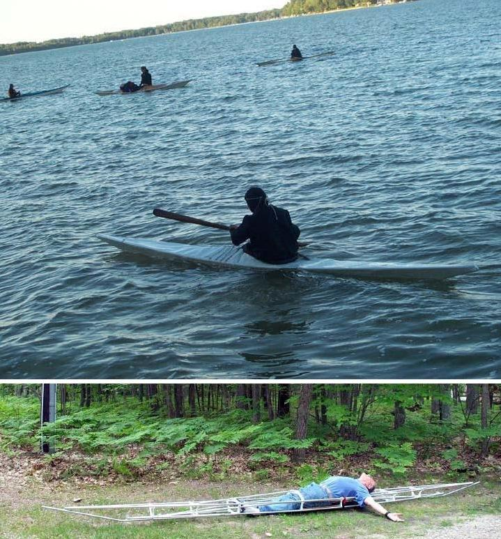

| Sea Rover and Sea Rover 2 by Aaron Stander (US) | Menu Previous Page Next Page |
|

Aaron, from Traverse City, Michigan has built a folding Sea Rover and Sea Rover 2. His wife Mary K ( pic 1) did her first roll in the Sea Rover. Aaron feels that the higher volume Sea Rover 2 ( pic 2) handles rough water better, but isn't quite as easy to roll. He next plans to build either Sea Flea's or Sea Pup's for his grand kids.
|
|